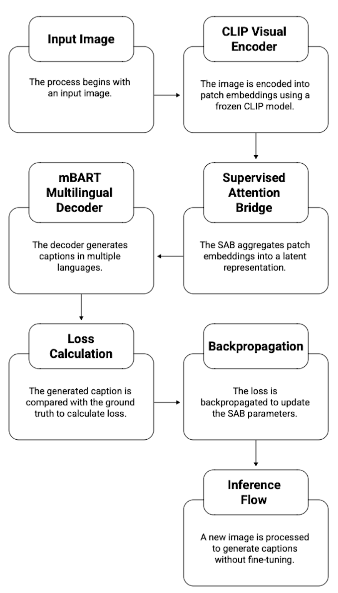
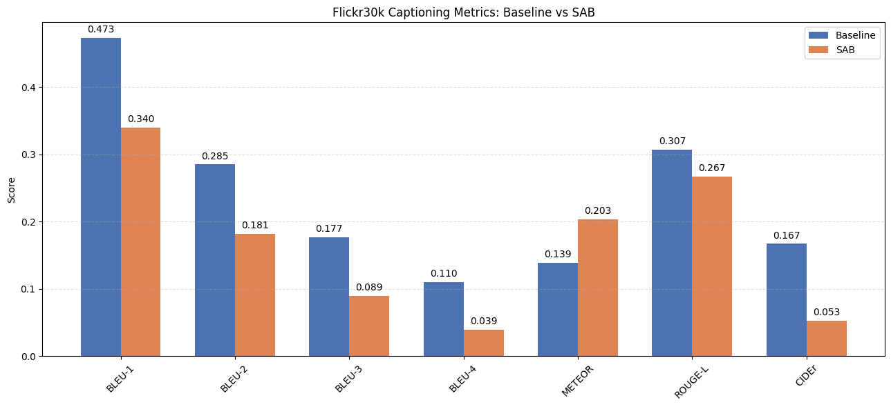

Bridge Layers & Components
- Input Projection (1 layer): A linear layer maps CLIP patch embeddings from
512to the mBART space1024, aligning visual features with the decoder embedding dimension. - Transformer Encoder Stack (4 layers): A stack of 4 transformer encoder blocks, each with 8-head self-attention, a 2048-dim feed-forward network, residual connections, layer normalization, and
0.1dropout to refine patch-level interactions. - Learnable Bridge Tokens (32 queries): A set of 32 learnable query tokens (
num_bridge_tokens = 32) attend over all visual tokens, acting as semantic anchors that aggregate fine-grained information into compact representations. - Cross-Attention Pooling: A multi-head attention layer (8 heads) uses the queries as Q and the refined CLIP tokens as K,V, producing 32 bridge tokens aligned with mBART’s input space.
- Output Normalization: A final layer normalization ensures stable scaling of the bridge outputs before they are passed to mBART as prefix tokens for caption generation.
Training & Inference Flow

Input image → frozen CLIP encoder → 4-layer SAB with 32 query tokens → mBART decoder.
During training, the caption loss is backpropagated through the bridge only; at inference, the
trained bridge is reused without fine-tuning CLIP or mBART.

Train vs validation loss across 20 epochs illustrates that the bridge continues to learn,
while the validation curve saturates, highlighting the impact of limited COCO supervision.

Captioning metrics on Flickr30k: SAB preserves competitive BLEU-1 while trading some n-gram precision for stronger semantic alignment as reflected in METEOR.
Training vs validation loss across epochs: the bridge continues to learn, while the validation curve flattens and slightly increases, indicating the need for more data or stronger regularization.
Ablation Insights
- Query Tokens: Removing learnable queries leads to generic, under-grounded captions, confirming their role in aggregating detailed patch information.
- SAB vs Linear Bridge: The transformer-based bridge captures richer cross-modal relationships than a single linear layer, even when BLEU scores are constrained by limited supervision.
- Training Dynamics: Longer training stabilizes the bridge, but the loss curves suggest that scaling the dataset is more beneficial than simply adding epochs.
- Practical Takeaway: SAB provides a more semantically faithful mapping from CLIP patches to mBART tokens, and the visual metrics help diagnose where future improvements should target.